Drawing Strategies
AGKFogOfWarVolume implements different strategies that implements the fog of war drawing.
The default implementation is UGKShadowCasting, other strategies are provided for their
educational value but should not be used in production.
Implementations
All fog implementations inherit from UGKFogOfWarStrategy.
Drawing the fog is half of the problem, has you will need to be able to query
the fog to know if a unit from Team X is visible by Team Y for replication purposes.
If the feature is not implemented, clients will receive replication updates for hidden units
and cheater could use the data to gain an unfair advantage.
RayCast V1
Note
RayCast is using a custom collision channel, it is expected to be using ECC_GameTraceChannel1 by default,
the exact collision channel is customizable using the Collision trace property in FogOfWarVolume
The Collision channel FoWObstacle is used to control if the actor is blocking vision or not,
by default all actors block visions.
[/Script/Engine.CollisionProfile]
+DefaultChannelResponses=(Channel=ECC_GameTraceChannel1,DefaultResponse=ECR_Block,bTraceType=True,bStaticObject=False,Name="FoWObstacle")
Draws n rays, draw lines of a given width on the Fog of War texture.
Tickness |
Rays |
Render |
Fog Texture |
2 |
36 |
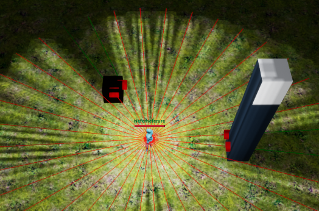 |
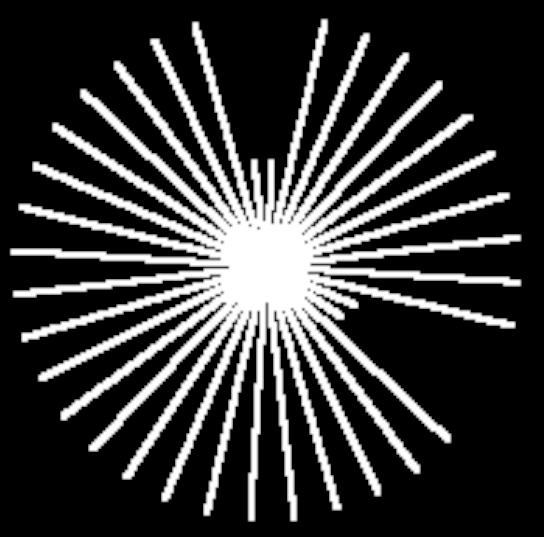 |
1 |
360 |
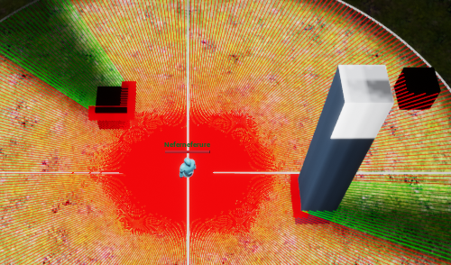 |
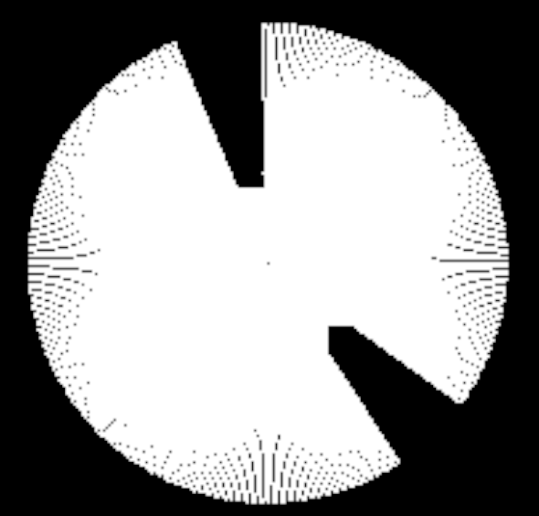 |
2 |
720 |
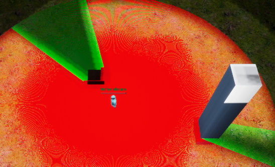 |
RayCast V2
Draws n rays, draw triangles with a material.
Rays |
Render |
Fog Texture |
12 |
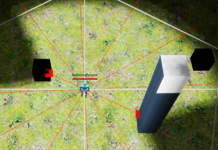 |
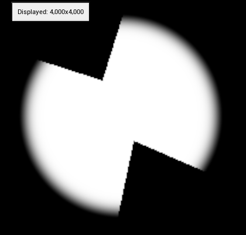 |
36 |
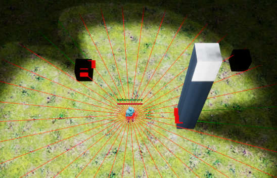 |
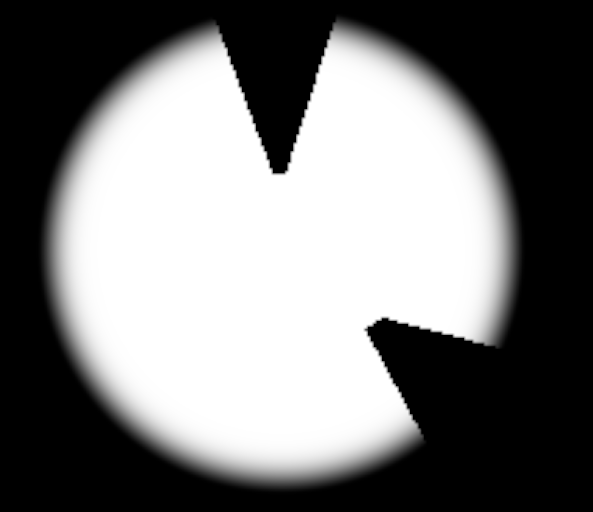 |
RayCast V3
For each actors in vision range trace 4 rays; 2 Left/right rays, one that misses and one that hits
Rays |
Render |
Fog Texture |
12 |
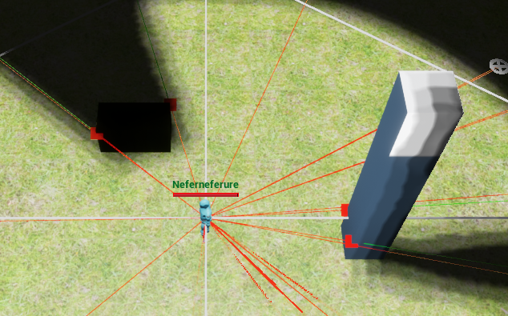 |
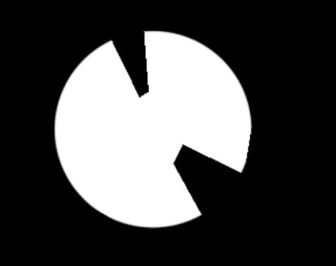 |
Discrete Tiles V1
Split the world in square tiles & draw the line of sight.
Upscaled |
Render |
Fog Texture |
Yes |
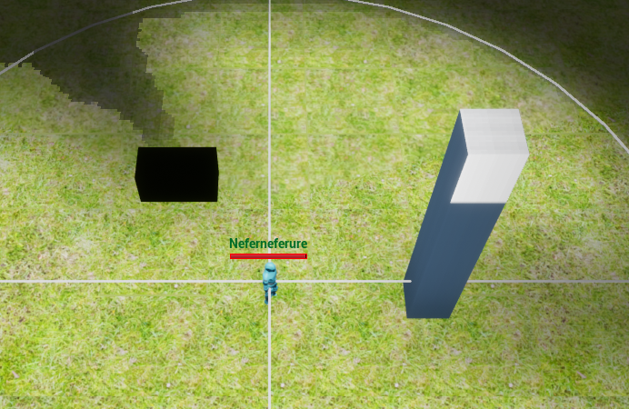 |
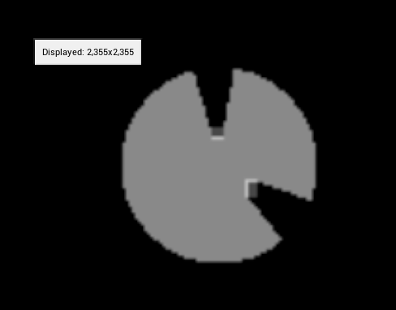 |
Comparison
Strategy |
Pros |
Cons |
RayCast V1 |
|
|
RayCast V2 |
|
|
RayCast V3 |
|
|
Discrete V1 Shadow Casting |
|
|
Transforms (Exploration & Upscaling)
UGKTransformerStrategy can be used to implement post processing steps on the fog textures, to
tweak its final look.
Exploration & Upscaling are both implemented using UGKTransformerStrategy.
Idea
Change the drawing backend per actors * Make client use a prettier/slower implementation * Server use faster implementation
I thought I could improve my fog of war by using a point light for the tracing and draw the point light on a render target but it does not seem possible in UE4. There are 3 light channels but they cant be rendered separately or I have not found a way to do so
Note
Decal Rendering
A decal Component on the AGKFogOfWarVolume can be used to render the fog of war on screen instead of using a post processing step.
This method is not advised because it might adversly impact other part of the game that are using decals (cursor, etc..)
Additionally in the case of a game with factions it is easier to tweak the CameraComponent|PostProcessingMaterial to use the faction fog of war than to
modify the globally unique AGKFogOfWarVolume.
Note
UnrealEngine implements UAISense_Sight (doc) which requires sightable targets to implement IAISightTargetInterface.
The implementation is different an tries to limit the number of trace done.
As a result the full line of sight is not drawn. It might be a path worth investigating if you find AGKFogOfWarVolume
to be too expensive.